Why Trondheim
Trondheim, the former Viking capital of Norway
Trondheim was the capital of Norway during the Viking age until 1217. Experience the history as you wander through the city.
Visit Nidarosdomen, the world's northernmost medieval cathedral and the end point of the St. Olav Ways pilgrimage. The cathedral was built on the the burial site of St. Olav, the Norwegian king who became Norway's patron saint. You can experience the pilgrimage for a day by completing the last leg of the journey from Lian.
Wander through the narrow alleys and colorful houses in the historic Bakklandet neighborhood. The neighborhood has been preserved since the 17th century and is a great place to visit local cafes and restaurants. Bakklandet is home to the world's first bicycle lift, Trampe. Grab a coffee from one of the cafes and enjoy the entertainment of tourists trying to get up the hill with Trampe, with varying degrees of success. From Bakklandet, stroll over to Gamle Bybro, Trondheim's famous old town bridge, and view the colorful wharf buildings that have been preserved from the 18th century.
Friluftsliv is the Norwegian belief that life is best lived outside. With being situated on the fjord and the Bymarka nature reserve nearby, Trondheim offers plenty of opportunities to get out and enjoy nature. Whether its going for a hike in Bymarka, going for a swim in the fjord, or grilling out at Korsvika. If you're lucky, you might even be able to catch the northern lights dancing across the fjord!
Restaurants
My Favorite Restaurants in Trondheim
Kalas and Canasta
Quaint restaurant in Bakklandet serving upscale Norwegian dishes
Address:
Nedre Baklandet 5
What I like about it:
Fresh food and a great atmosphere. Be sure to ask about the daily special!
Learn moreLadekaia
Norwegian restaurant located along the fjord
Address:
Leiv Eirikssons vei 42
What I like about it:
Great stop to relax and enjoy a coffee along the Ladestein trail. There is a large outdoor seating area with wonderful views of the fjord. The building was previously a German warehouse during the Second World War. You can still see the old rails and cranes used during the war.
Learn moreGola Gelato and Cafe
Small cafe serving artisan gelato, empanadas, and coffee
Address:
Innherredsveien 22A
What I like about it:
Best empanadas and ice cream in Trondheim! The owners are very friendly and welcoming.
Learn moreGallery
My Photos from Trondheim

 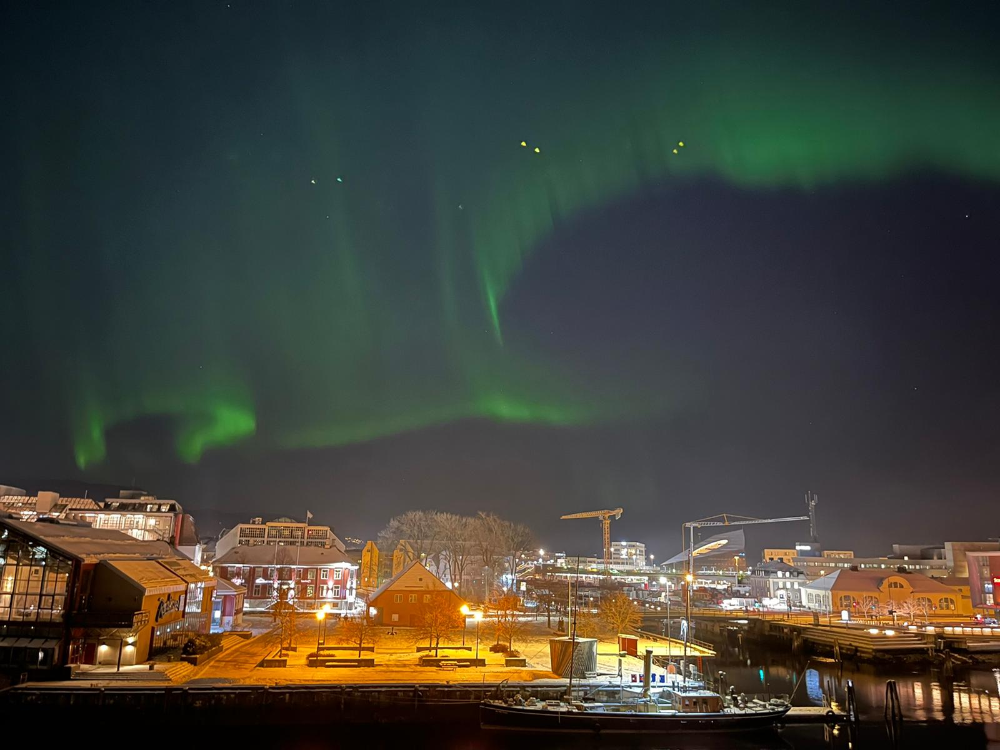
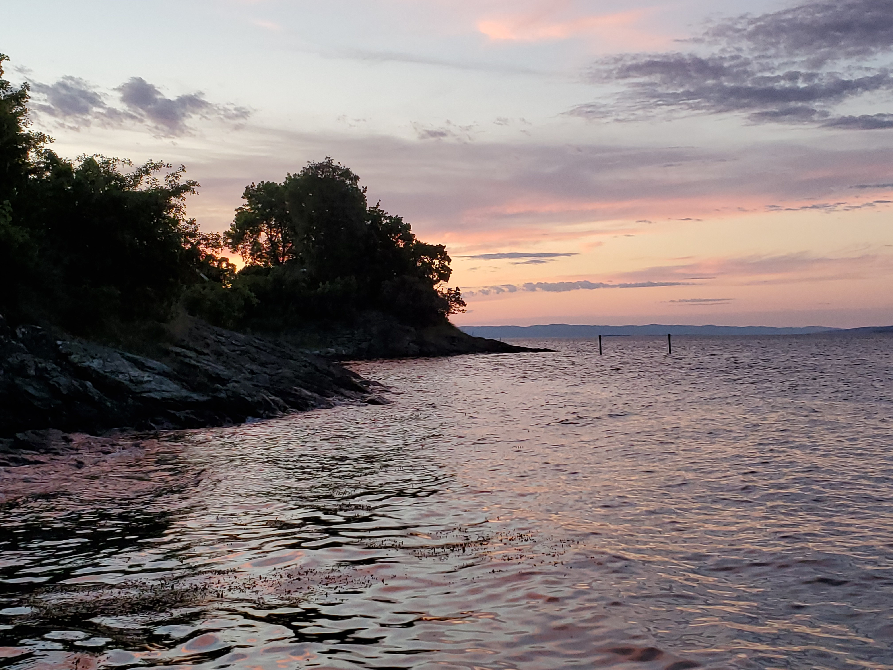
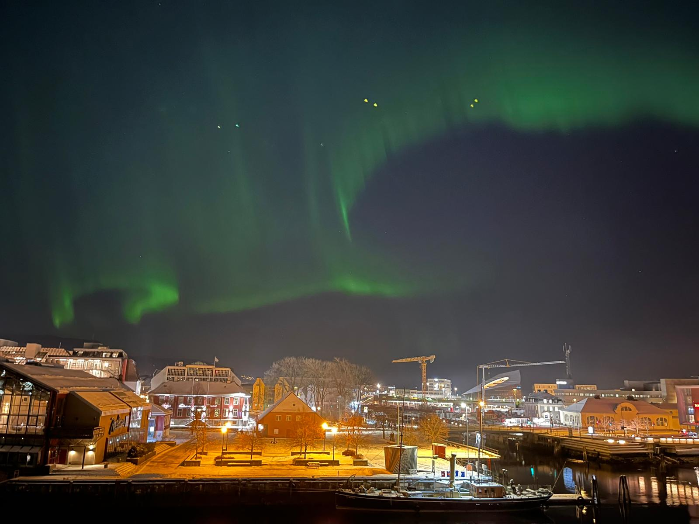
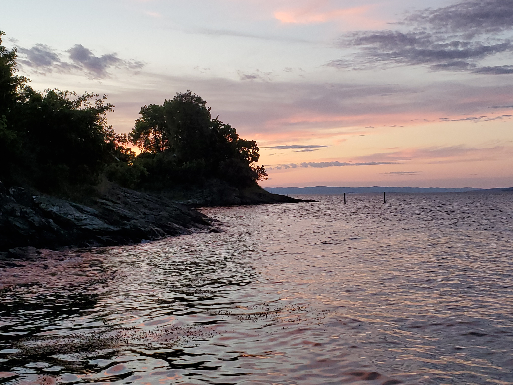


 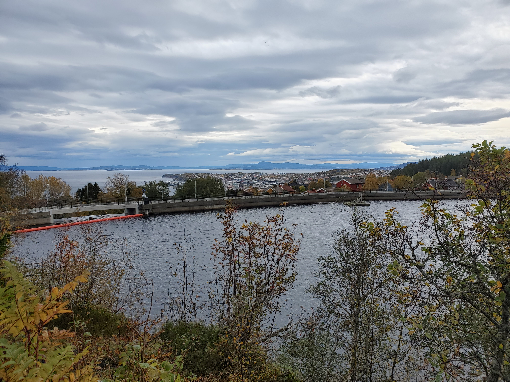
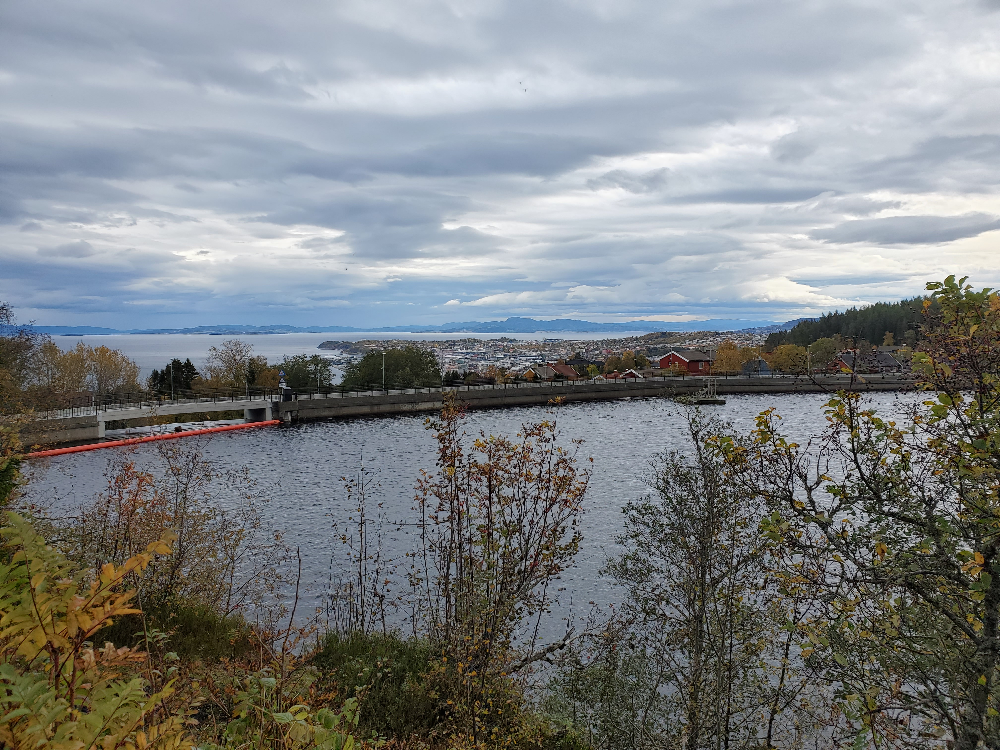
 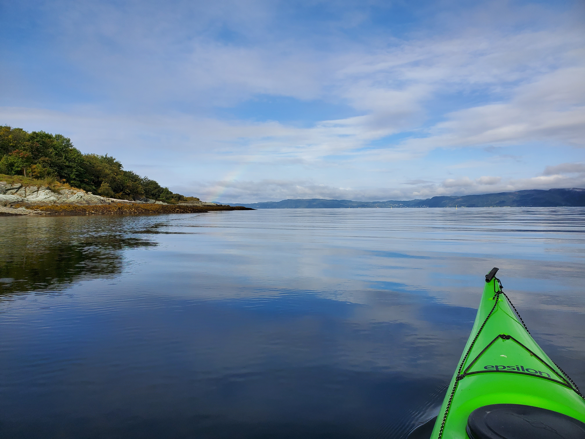
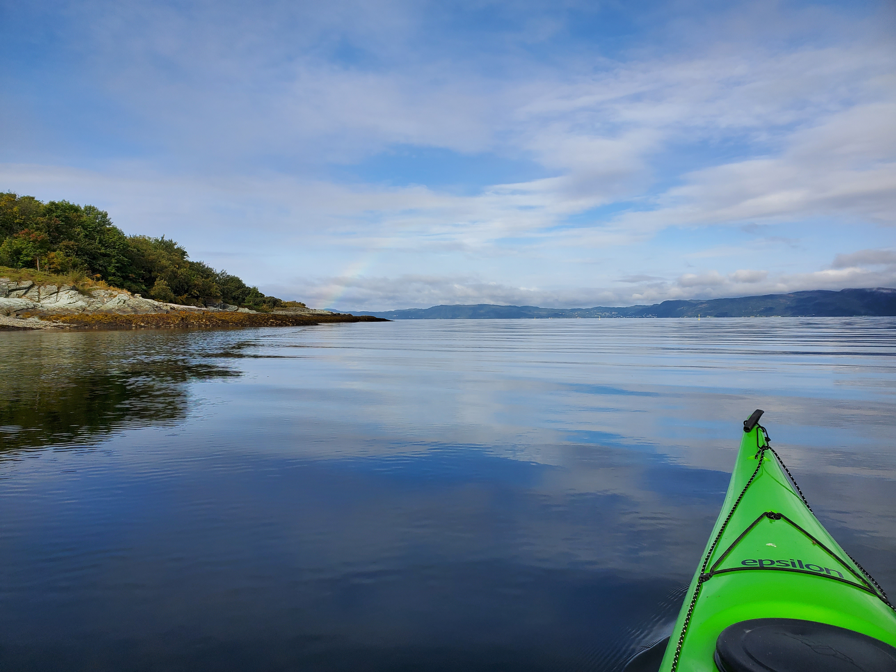


 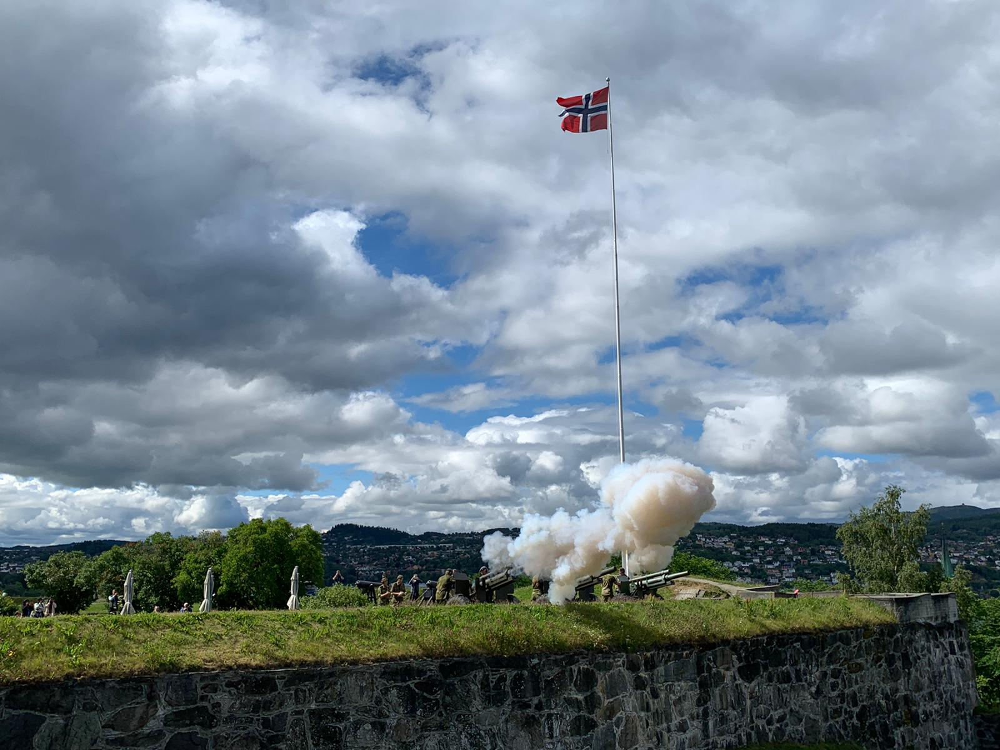
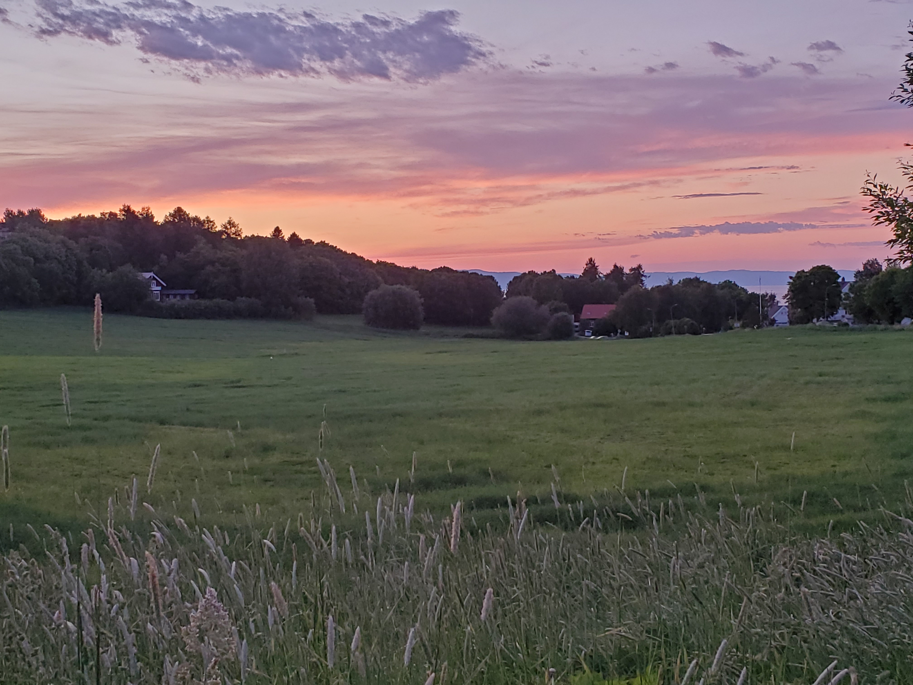
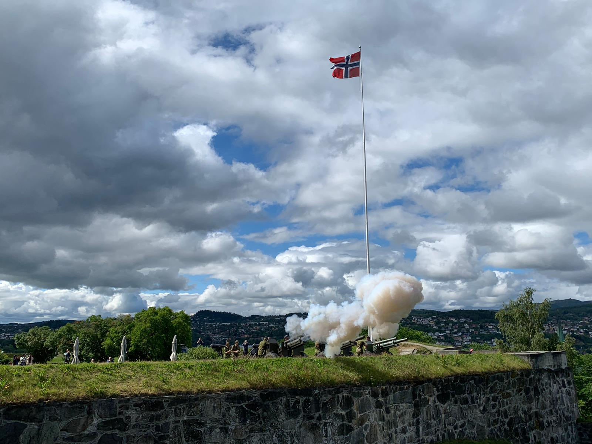
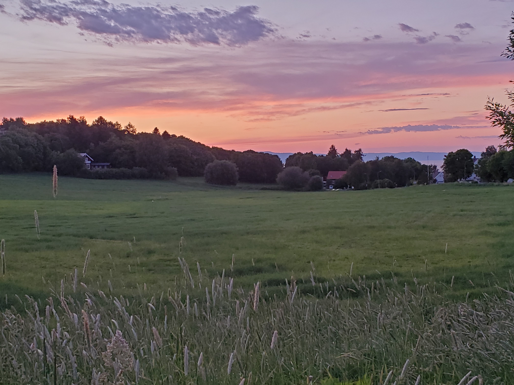